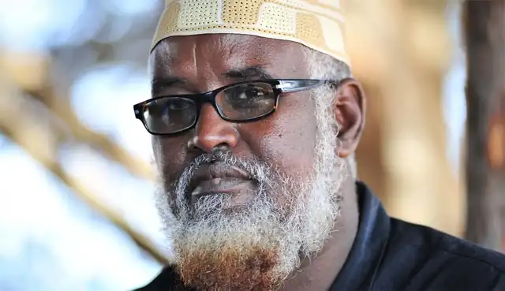

Madaxweynaha Jubbaland, Axmed Maxamed Islaam (Axmed Madoobe), ayaa 18 iyo 19 Nofembar 2026 magaalada Kismaayo ka jeediyay hadallo kulul oo uu kaga hadlay xaaladda siyaasadeed ee Soomaaliya. Wuxuu si toos ah u dhaliilay Madaxweyne Xasan Sheekh Maxamuud, wuxuuna ka digay in dalku ku socdo burbur iyo kala tag.
Warbixintan waxay sharraxaysaa waxa uu Madoobe yiri, cidda uu yahay, sida uu Kismaayo u soo maamulayay, waxa ay ku eedeeyaan dhaleeceeyayaashiisu, waxa ay taageerayaashiisu ka yiraahdaan, iyo su’aasha ah: ma khatar buu ku yahay dhismaha dowladnimada Soomaaliyeed?
Xusuusin: Qaybta “Falanqayn” waa aragti iyo qiimayn. Qaybaha kale waa xaqiiqooyin la soo tebiyay.
Khudbaddii Kismaayo: maxuu yiri?
Hadalka koowaad wuxuu ka jeediyay habeenkii 18 Nofembar munaasabad ka dhacday Dekedda Kismaayo, halkaas oo uu xarigga uga jaray dhismayaal cusub oo lagu dhisay iskaashi ay Jubbaland la leedahay shirkadda AD Ports Group ee Imaaraadka. Maalintii xigtay wuxuu shir jaraa’id ku qabtay Kismaayo. Labada hadal waxa ka soo baxay qodobadan:
- Burbur iyo kala tag: Wuxuu sheegay in Soomaaliya ay qarka u saaran tahay inay burburto oo kala tagto. “Waddankan god ayuu ku sii dhacayaa, waxaana loo baahan yahay in talo la isugu yimaado,” ayuu yiri.
- Xasan Sheekh iyo danaha gaarka ah: Wuxuu ku eedeeyay Madaxweyne Xasan Sheekh inuu danihiisa gaarka ah ka hormariyay danta qaranka, isla markaana uu jebiyay heshiisyadii siyaasadeed ee dowladnimada lagu dhisay.
- Muqdisho lama aamini karo: Wuxuu sheegay in Muqdisho aan talo la isugu tegi karin, maadaama aan la isku aamini karin, iyo in gogosha Xasan Sheekh fidiyay aysan suurtagal ahayn.
- Baaq madaxweynaha loo diray: “Madaxweynow, waddankan wuxuu u baahan yahay in siyaasadda laga heshiiyo,” ayuu yiri. Warbixinno kale waxay sheegeen inuu ugu baaqay Xasan Sheekh inuu talada dhulka dhigo.
- Beesha caalamka: Wuxuu ugu baaqay beesha caalamka inay soo farageliso, isagoo ka digay in xaaladda Soomaaliya ay saameyn karto amniga Geeska Afrika iyo gobolka Gacanka.
- Jubbaland waa Soomaaliya: Wuxuu ku nuuxnuuxsaday in Jubbaland ay qayb ka tahay Soomaaliya, ayna diyaar u tahay xal siyaasadeed.
Hadalladani waxay yimaadeen xilli khilaaf weyn ka taagan yahay doorashooyinka iyo muddo-xileedka madaxweynaha, iyo isla toddobaadkii Muqdisho ay safiirka Imaaraadka ku amartay inuu dalka ka baxo. Markii warbixintan la qorayay, dowladda federaalka si rasmi ah ugama jawaabin khudbadda Madoobe.
Waa kuma Axmed Madoobe?

Axmed Madoobe wuxuu ku dhashay 1950 magaalada Qabridahar ee Itoobiya. Wuxuu dugsiga sare ku dhammeystay Muqdisho, kadibna wuxuu bartay sharciga Islaamka. Waa nin ay socdaalkiisa siyaasadeed iyo kan hubeysan isku dhex jiraan:
- Sagaashameeyadii: Wuxuu ka tirsanaa Al-Itixaad Al-Islaami, wuxuuna ka qayb galay isku daygii ay ku doonayeen inay Kismaayo la wareegaan.
- 2006: Wuxuu la dagaallamay Maxkamadaha Islaamiga, waxaana loo magacaabay guddoomiyaha gobollada Jubbooyinka iyo Gedo.
- 2007–2009: Markii ciidamada Itoobiya soo galeen dalka, wuxuu ku dhaawacmay duqeyn diyaaradeed, waxaana lagu qabtay meel u dhow xadka Kenya. Wuxuu xabsi ugu jiray Itoobiya ilaa Itoobiya ka baxday Soomaaliya horraantii 2009.
- 2009: Wuxuu muddo kooban xildhibaan ka ahaa baarlamaanka dowladdii Shariif Sheekh Axmed, balse April 2009 ayuu iska casilay oo ku biiray Xisbul Islaam. Oktoobar 2009, ciidamadiisu waxay Kismaayo kula dagaallameen Al-Shabaab. Isla sannadkaas ayuu aasaasay Ururka Raaskambooni.
- 2011–2012: Ciidamada Kenya waxay Soomaaliya soo galeen Oktoobar 2011. Ciidamada Raaskambooni oo la shaqaynayay ciidamada Kenya ee ka hoos shaqeeyay AMISOM ayaa dhammaadkii Sebtembar 2012 Al-Shabaab ka saaray Kismaayo. 1 Oktoobar 2012, Madoobe waxaa loo magacaabay madaxa ku meel gaarka ah ee maamulka Jubbaland.
14 sano oo uu Kismaayo xukumayay
Tan iyo 2012, Madoobe ayaa hoggaaminayay Jubbaland. Waxaa la doortay 2013, waxaana dib loo doortay 2015, 2019 iyo 2024. Doorashooyinka dambe midkoodna khilaaf la’aan kuma dhammaan:
- 2013: Heshiiskii Addis Ababa ee Ogosto 2013 ayaa dowladda federaalka iyo Jubbaland ku heshiiyeen in maamulka la aqoonsado, ciidamadiisana lagu daro Ciidanka Xoogga Dalka.
- 2019: Wuxuu ku guuleystay doorasho uusan ku jirin musharax xooggan oo kale. Mucaaradku waxay sheegeen in doorashadu aysan dimuqraadi ahayn oo natiijada la maroojiyay. Dowladdii Farmaajo waxay qaadacday doorashada, waxayna taageertay doorasho kale oo is barbar socota. 2020 dagaal culus ayaa u dhexeeyay ciidamada dowladda federaalka iyo kuwa Jubbaland agagaarka xadka Kenya.
- 2024: Waxaa dib loogu doortay doorasho dadban oo ku dhisan habkii beelaha. Dowladda Xasan Sheekh ma aqoonsan, iyadoo ku doodaysay in dalku u socdo doorasho qof iyo cod ah. Maxkamad Jubbaland ah ayaa amar xarig ah u soo saartay Xasan Sheekh, dowladda federaalkuna waxay iyaduna amar xarig u soo saartay Madoobe, iyadoo ku eedeysay khiyaano qaran.
- Raaskambooni, Diseembar 2024: Dagaal ayaa u dhexeeyay ciidamada federaalka iyo kuwa Jubbaland. Jubbaland ayaa la wareegtay magaalada, dowladda federaalkuna ciidamadeeda waa ka saartay gobolka Jubbada Hoose.
Muran uu la galay dowlado badan
Dhaleeceeyayaashiisu waxay sheegaan in Madoobe uu khilaaf la galay ku dhawaad dowlad kasta oo Muqdisho fadhiday. Waxa ay tusaale u soo qaataan:
- Waqtiga dowladdii ku meel gaarka ahayd ee Cabdullaahi Yuusuf, wuxuu la jiray Maxkamadaha Islaamiga oo dowladdaas iyo ciidamada Itoobiya la dagaallamay.
- 2009, kadib markii uu ka tagay baarlamaanka Shariif Sheekh Axmed, wuxuu ku biiray Xisbul Islaam oo mucaarad hubeysan ku ahaa dowladdaas.
- 2013, dowladda Xasan Sheekh ee xilligaas iyo Ra’iisul Wasaare Shirdoon ayaa shirka lagu dhisay Jubbaland ku tilmaamay mid aan dastuuri ahayn.
- 2019–2020, wuxuu si kulul ula dagaallamay dowladdii Farmaajo, ilaa ciidamadu ay ku dagaallameen Gedo.
- 2024–2026, wuxuu ka mid yahay mucaaradka ugu codka dheer ee Xasan Sheekh.
Si kastaba ha ahaatee, Madoobe marar badan ayuu heshiis la galay dowladaha dhexe. Tusaale ahaan wuxuu saxiixay heshiiskii Addis Ababa 2013, wuxuuna Sebtembar 2020 Muqdisho kula kulmay Farmaajo, halkaas oo ay is-afgarad ku gaareen.
Eedeymaha dhaleeceeyayaashiisa: “kali-taliye”
Mucaaradka Jubbaland iyo dad badan oo siyaasiyiin ah waxay Madoobe ku tilmaamaan kali-taliye. Waxa ay tusaale u soo qaataan:
- Muddada: 14 sano ayuu xukunka hayay, wuxuuna haystaa muddo-xileedkiisii saddexaad.
- Doorashooyinka: Doorashooyinkiisa waa dadban, waxayna ku dhisan yihiin tiro yar oo ergo ah. Mucaaradku waxay ku eedeeyaan inuu doorashooyinka maroorsado.
- Taageerada shisheeye: Waxay ku eedeeyaan inuu ku tiirsan yahay Kenya iyo dowlado kale oo shisheeye, si uu xukunka ugu sii haysto.
- Dagaallada: Waxay sheegaan in khilaafkiisa uu marar badan u horseeday dagaal dhex mara ciidamada Soomaaliyeed, sida Gedo 2020 iyo Raaskambooni 2024.
Mid ka mid ah eedeymaha ugu culus waxaa jeediyay Fahad Yaasiin, oo ahaa madaxa hay’adda sirdoonka (NISA) xilligii Farmaajo. Waraysi uu bixiyay Juun 2022, Fahad wuxuu Madoobe ku tilmaamay “kansar ku dhex jira siyaasadda Soomaaliya,” wuxuuna yiri dalku wuu hagaagi doonaa maalinta uu Madoobe tago. Wuxuu sidoo kale ku tilmaamay “mashruuc shisheeye oo Soomaaliya lagu beeray,” wuxuuna ku eedeeyay Kenya inay xukunka ku haysay si ay daneheeda u ilaashato.
Waxaa muhiim ah in la ogaado in Fahad Yaasiin uu isagu yahay shakhsi muran badan dhaliyay. 2020, sarkaal ka tirsan ciidamada Jubbaland ayaa sheegay in Fahad iyo dowladdii Farmaajo ay u ballan qaadeen hal milyan oo doollar si uu uga caawiyo xilka ka qaadista Madoobe. Arrintaas oo kale waxay muujinaysaa in khilaafka Madoobe iyo Muqdisho uu yahay mid labada dhinac leh.
Waxa ay taageerayaashiisu yiraahdaan
Taageerayaasha Madoobe iyo dad badan oo reer Jubbaland ah waxay arrinta u arkaan si kale:
- Xoreynta Kismaayo: Ciidamadiisa ayaa door weyn ka qaatay ka saaridda Al-Shabaab magaalada Kismaayo 2012, waxayna sheegaan inuu yahay hoggaamiye la dagaallamay Al-Shabaab sannado badan.
- Dowlad-goboleed shaqaynaysa: Waxay sheegaan in Jubbaland ay ku dhisantay dakhliga dekedda iyo canshuuraha, ayna leedahay ciidamo iyo hay’ado, xitaa markii dowladda dhexe ay ka hor imaanaysay.
- Difaaca federaalka: Waxay sheegaan in Madoobe uu ilaalinayo nidaamka federaalka, kana hortaagan yahay awood isku ururin oo Muqdisho ah.
- Isaga laftiisu: Nofembar 2024, Madoobe wuxuu yiri: “Kenyan ma ihi, Itoobiyaan ma ihi, Soomaali baan ahay.” Wuxuu Xasan Sheekh ku eedeeyaa inuu isagu yahay ka u janjeera kali-talis, isagoo xilka sii haysta muddadiisa kadib, kana fogaanaya wadatashiga.
Falanqayn: Ma khatar buu ku yahay dhismaha dowladnimada?
Qaybtani waa falanqayn, ee ma aha war.
Su’aashan jawaab fudud ma leh. Dhaleeceeyayaashiisu waxay leeyihiin doodo culus: hoggaamiye 14 sano xukunka haya, doorasho dadban ku soo laabtay, ciidamo u gaar ah leh, dowlado shisheeye xiriir toos ah la leh, ciidamadiisuna ay dhowr jeer la dagaallameen ciidamada qaranka. Arrimahaas oo dhan waxay wiiqaan awoodda dowladda dhexe. Khubarada amniga ayaa sidoo kale ka digay in khilaafka Muqdisho iyo Kismaayo uu Al-Shabaab u furo meel ay ka soo galaan.
Laakiin dhibaatadu kaligiis kuma koobna. Dowladdii Farmaajo iyo tan Xasan Sheekh labaduba waxay isku dayeen inay xoog iyo siyaasad ku beddelaan maamulka Jubbaland. Dastuurka ku meel gaarka ah weli ma cadeyn awoodda u dhexeysa dowladda dhexe iyo dowlad-goboleedyada. Haddii Madoobe maanta tago, khilaafka ku saabsan cidda leh awoodda dekedaha, ciidamada iyo doorashooyinka ma dhammaan doono.
Waxa la oran karaa Madoobe wuxuu calaamad u yahay dhibaato weyn oo ka jirta nidaamka federaalka Soomaaliya: madaxda goboleedyada iyo madaxda Muqdisho midkoodna ma aamino kan kale, labaduna xukunka way sii haystaan iyagoon doorasho la isku raacsan yahay qaban.
Gabagabo
Khudbadda Kismaayo waxay muujisay in kala fogaanshaha Muqdisho iyo Kismaayo uu sii ballaaranayo. Madoobe wuxuu Xasan Sheekh ku eedeeyay inuu dalka u horseedayo burbur, halka dhaleeceeyayaashiisuna ay isaga ku eedeeyaan inuu dowladnimada wiiqayo.
Shacabka Soomaaliyeed waxay u baahan yihiin in madaxdooda ay ka heshiiyaan doorasho la isku raacsan yahay iyo xadka awoodda dowladda dhexe iyo dowlad-goboleedyada. Inta taasi dhici weydo, khilaaf noocan oo kale ah wuu sii socon doonaa, ciddii xukunka haysaba.